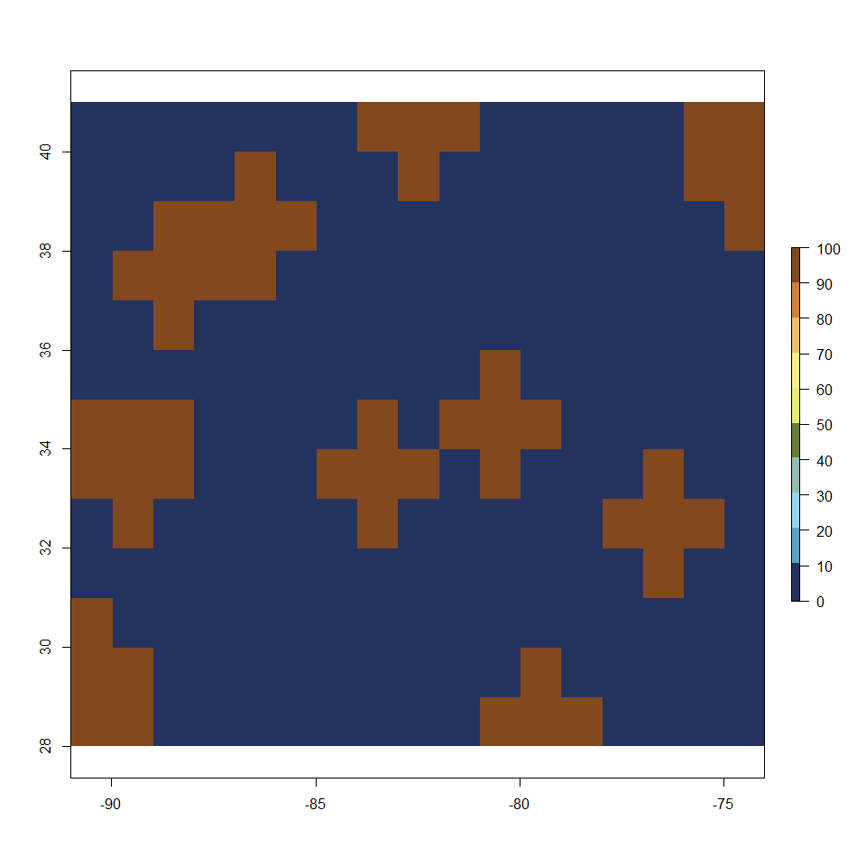
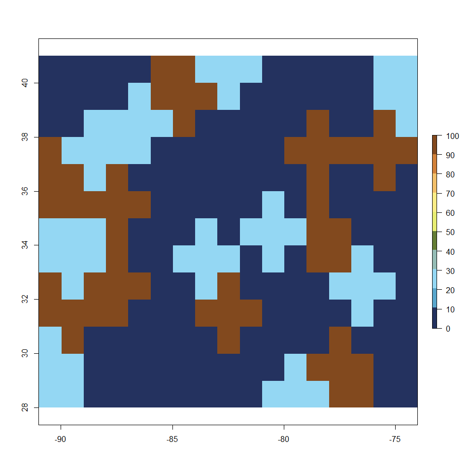
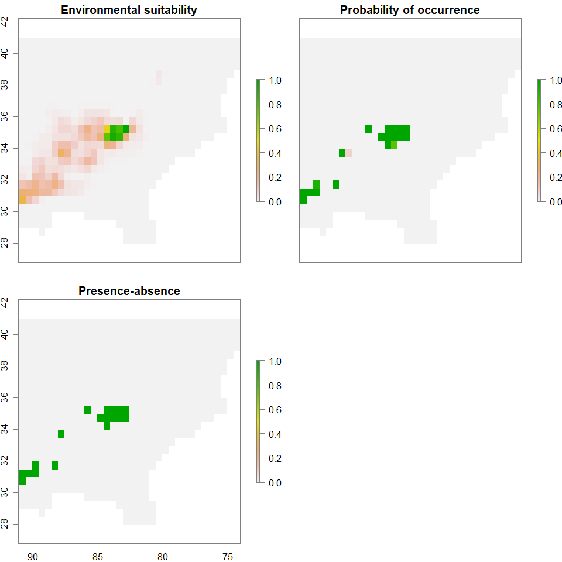
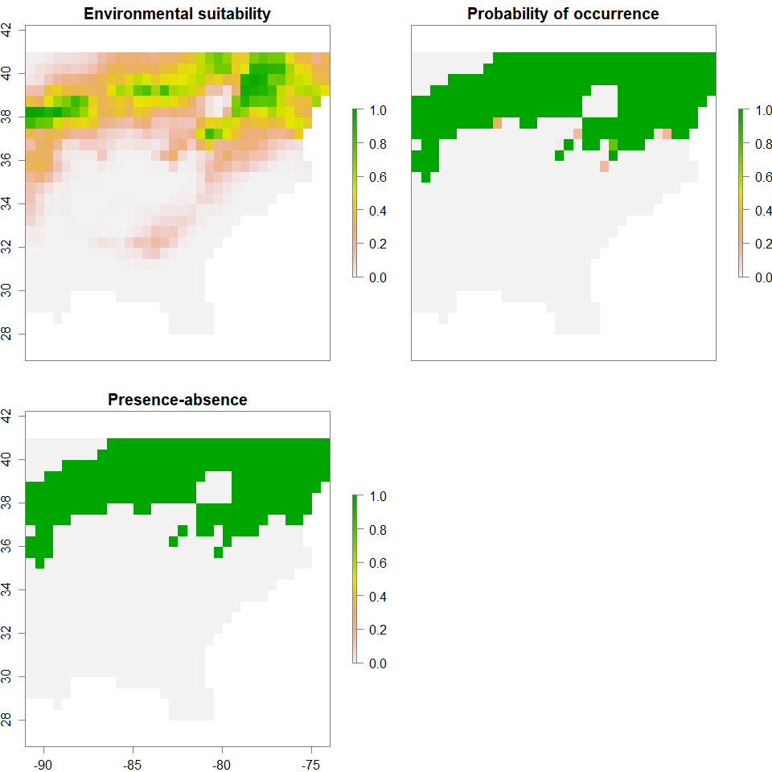
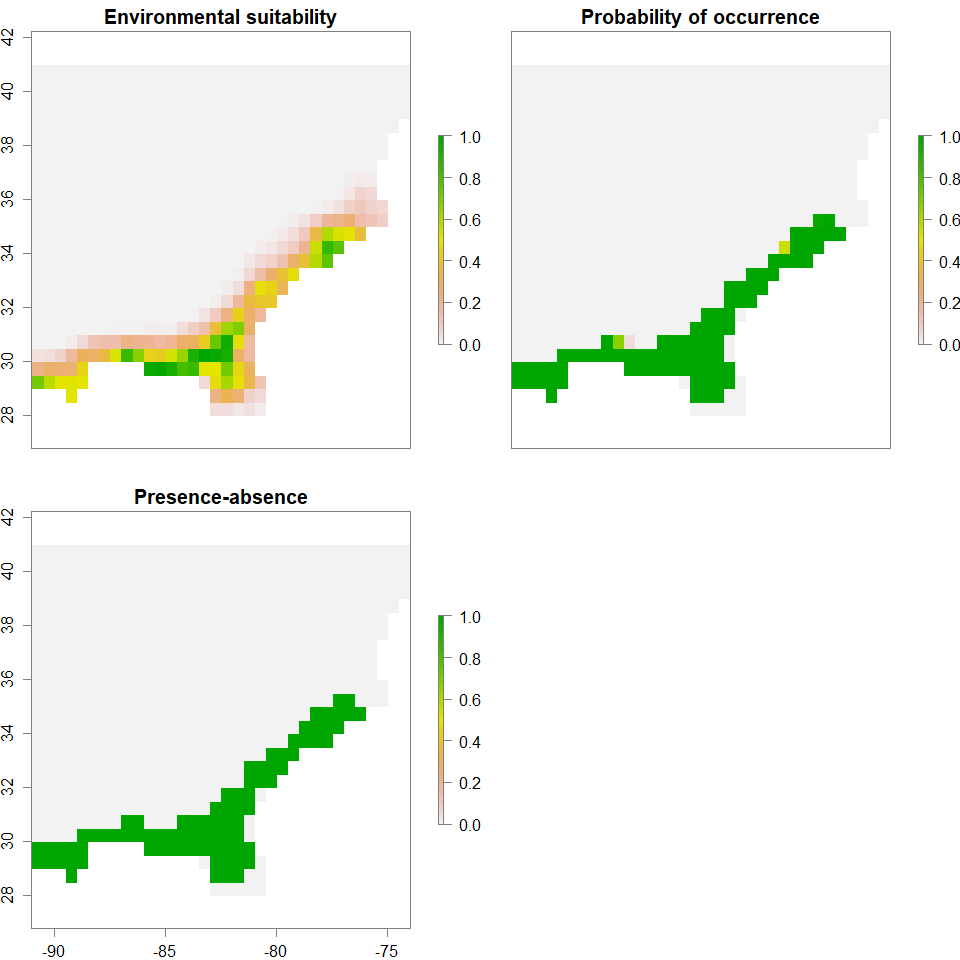
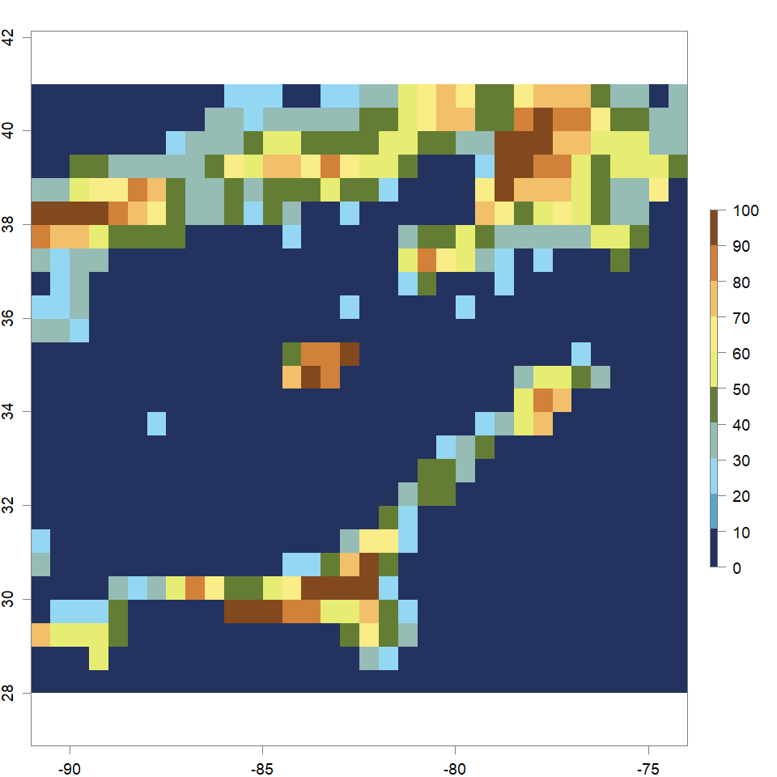
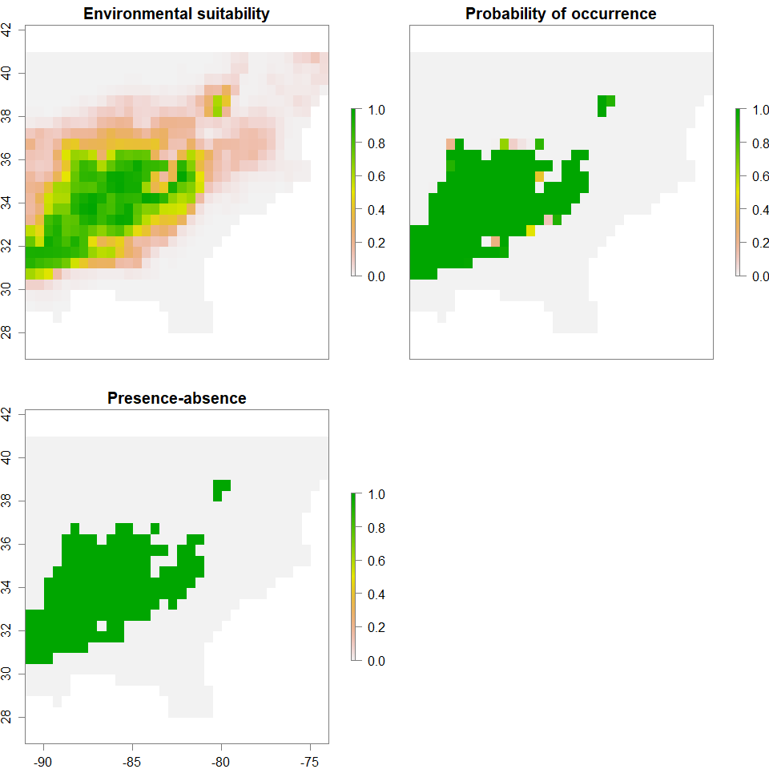
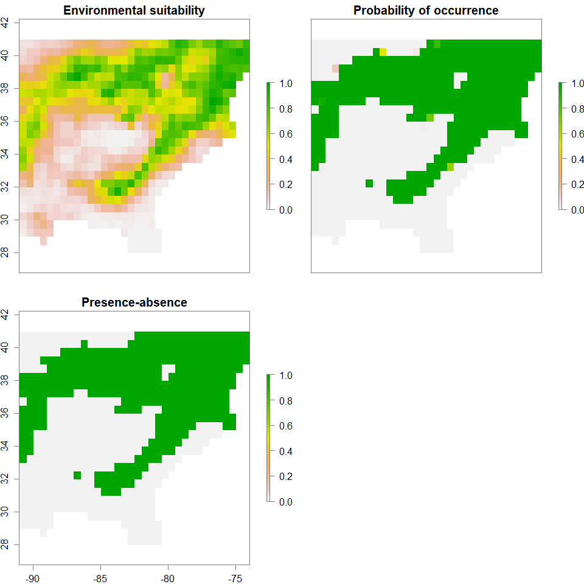
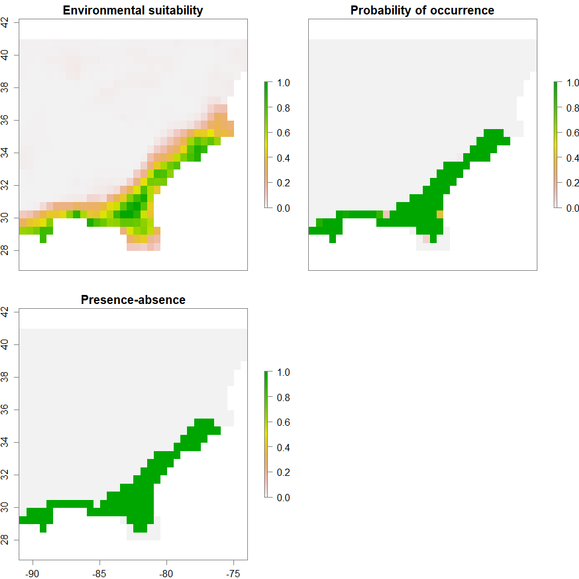
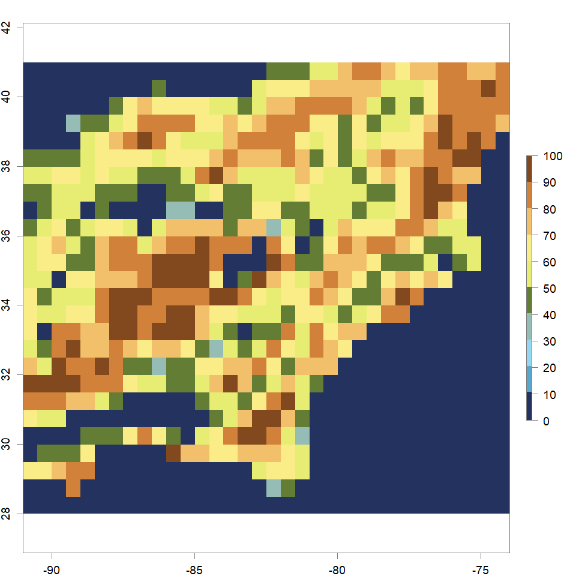

Landscape Genetic Simulations
The main purpose of this article is to break down the simulation steps: landscape generation and simulation of genotpypes based on the generated landscapes.
Color palette
library(ggsci)
schwifty=pal_rickandmorty()
schwifty.cols=colorRampPalette(schwifty(12)[c(3,12,4,6,1,9,8,2)])
cols=schwifty.cols(10)
library(scales)
show_col(schwifty(12))
show_col(cols)
Phase I (Test): Single-locus genotypes
Generating simple landscapes: two habitats
landscapeR package: simulating simple landscapes (barrier and two different values of carrying capacity/habitat suitability): habitat 1 has low permeability cells (carrying capacity = 5) between habitable patches (carrying capacity = 100), while habitat 2 has high permeability cells (carrying capacity = 25), in addition to barriers (carrying capacity = 0).
library(landscapeR)
library(raster)
m <- matrix(0, 13, 17)
r <- raster(m, xmn=-91, xmx=-74, ymn=28, ymx=41)
rr <- makeClass(r, 10, 4, val=1)
rr <- makeClass(rr, 10, 4, val=2)
rex <- rmSingle(rr)
#plot(rex,breaks=seq(0,2,length.out=11),col=cols)
habit1 <- rex
habit1[habit1==1] <- 100
habit1[habit1==2] <- 5
#plot(habit1,breaks=seq(minValue(habit1),maxValue(habit1),length.out=11),col=cols)
habit2 <- rex
habit2[habit2==2] <- 100
habit2[habit2==1] <- 25
#plot(habit2,breaks=seq(minValue(habit2),maxValue(habit2),length.out=11),col=cols)
Simulation of genotypes based on simple landscapes
landsim package: simulating selected SNPs based on the landscapeR-generated landscape.
- Habitat/Population 1
library(landsim)
pop1 <- make_population(
habitat = habit1,
inaccessible.value = "NA",
uninhabitable.value = 0,
genotypes = c( "aa", "aA", "AA" ),
N = c( 10, 10, 10)
)
migr1 <- migration(
kern = "gaussian",
sigma = 1,
radius = 10,
normalize = 1
)
migr1 <- setup_migration(migr1, pop1)
germ.vital1 <- vital(
function (N, ...) {
out <- r0 / ( 1 + migrate(rowSums(N),competition)/carrying.capacity )
return( cbind( aa=out, aA=s*out, AA=s^2*out) )
},
r0 = 0.1,
s = 1.05, # multiplicative selective benefit of the A allele
carrying.capacity = values(pop1$habitat)[pop1$habitable],
competition = migration(
kern="gaussian",
sigma=1,
radius=10,
normalize=1
)
)
germ.vital1 <- setup_vital(germ.vital1,pop1)
demog1 <- demography(
prob.seed = 0.2,
fecundity = 80,
prob.germination = germ.vital1,
prob.survival = 0.8,
seed.migration = migr1,
pollen.migration = migration(
kern="gaussian",
sigma=1,
radius=10,
normalize=1
),
genotypes = c("aa", "aA", "AA")
)
demog1 <- setup_demography(demog1,pop1)
sim1 <- simulate_pop(pop1, demog1, times=plot.times,
carrying.capacity=values(pop1$habitat)[pop1$habitable],
summaries=list(totals=function(N){colSums(N)}))
#matplot(sim1$summaries[["totals"]], type='l', xlab='time', ylab='numbers', lty=1 )
#legend("topright",lty=1,col=1:3,legend=colnames(sim1$summaries[["totals"]]))
- Habitat/Population 2
pop2 <- make_population(
habitat = habit2,
inaccessible.value = "NA",
uninhabitable.value = 0,
genotypes = c( "aa", "aA", "AA" ),
N = c( 10, 10, 10)
)
migr2 <- migration(
kern = "gaussian",
sigma = 1,
radius = 10,
normalize = 1
)
migr2 <- setup_migration(migr2, pop2)
germ.vital2 <- vital(
function (N, ...) {
out <- r0 / ( 1 + migrate(rowSums(N),competition)/carrying.capacity )
return( cbind( aa=s^2*out, aA=s*out, AA=out) )
},
r0 = 0.1,
s = 1.05, # multiplicative selective benefit of the A allele
carrying.capacity = values(pop2$habitat)[pop2$habitable],
competition = migration(
kern="gaussian",
sigma=1,
radius=10,
normalize=1
)
)
germ.vital2 <- setup_vital(germ.vital2,pop2)
demog2 <- demography(
prob.seed = 0.2,
fecundity = 80,
prob.germination = germ.vital2,
prob.survival = 0.8,
seed.migration = migr2,
pollen.migration = migration(
kern="gaussian",
sigma=1,
radius=10,
normalize=1
),
genotypes = c("aa", "aA", "AA")
)
demog2 <- setup_demography(demog2,pop2)
sim2 <- simulate_pop(pop2, demog2, times=plot.times,
carrying.capacity=values(pop2$habitat)[pop2$habitable],
summaries=list(totals=function(N){colSums(N)}))
#matplot(sim2$summaries[["totals"]], type='l', xlab='time', ylab='numbers', lty=1 )
#legend("topright",lty=1,col=1:3,legend=colnames(sim2$summaries[["totals"]]))
Phase II: Multi-locus genotypes
Generating simple landscapes: two habitats
landscapeR package: simulating simple landscapes (barrier and two different values of carrying capacity/habitat suitability): habitat 1 has low permeability cells (carrying capacity = 5) between habitable patches (carrying capacity = 100), while habitat 2 has high permeability cells (carrying capacity = 25), in addition to barriers (carrying capacity = 0).
library(landscapeR)
library(raster)
m <- matrix(0, 13, 17)
r <- raster(m, xmn=-91, xmx=-74, ymn=28, ymx=41)
rr <- makeClass(r, 10, 4, val=1)
rr <- makeClass(rr, 10, 4, val=2)
rex <- rmSingle(rr)
#plot(rex,breaks=seq(0,2,length.out=11),col=cols)
habit1 <- rex
habit1[habit1==1] <- 100
habit1[habit1==2] <- 5
plot(habit1,breaks=seq(minValue(habit1),maxValue(habit1),length.out=11),col=cols)
habit2 <- rex
habit2[habit2==2] <- 100
habit2[habit2==1] <- 25
plot(habit2,breaks=seq(minValue(habit2),maxValue(habit2),length.out=11),col=cols)
Landscape 1: Simple Landscape - Low Permeability:  Landscape 2: Simple Landscape - High Permeability: 
Simulation of genotypes based on simple landscapes
popRange package: simulating 20 selected and 180 neutral SNPs based on the landscapeR-generated landscape.
barrier <- habit2
barrier[barrier<1] <- -1
barrier[barrier>1] <- 1
#plot(habit1,breaks=seq(minValue(habit1),maxValue(habit1),length.out=11),col=cols)
#plot(habit2,breaks=seq(minValue(habit2),maxValue(habit2),length.out=11),col=cols)
#plot(barrier,breaks=seq(minValue(barrier),maxValue(barrier),length.out=11),col=cols)
habitat1.Sel <- habit1
habitat1.Sel[habitat1.Sel<11] <- 0
habitat1.Sel[habitat1.Sel>10] <- 0.2
#habitat1.Sel.df <- cbind(rep(1,nrow(habitat1.Sel)*ncol(habitat1.Sel)),
# rep(20,nrow(habitat1.Sel)*ncol(habitat1.Sel)),
# as.data.frame(habitat1.Sel),
# coordinates(habitat1.Sel)-0.5)
#colnames(habitat1.Sel.df) <- c("sSNP","fSNP","s","x","y")
habitat2.Sel <- habit2
habitat2.Sel[habitat2.Sel<11] <- 0
habitat2.Sel[habitat2.Sel>10] <- 0.1
#habitat2.Sel.df <- cbind(rep(1,nrow(habitat2.Sel)*ncol(habitat2.Sel)),
# rep(20,nrow(habitat2.Sel)*ncol(habitat2.Sel)),
# as.data.frame(habitat2.Sel),
# coordinates(habitat2.Sel)-0.5)
#colnames(habitat2.Sel.df) <- c("sSNP","fSNP","s","x","y")
#s.coords=c()
#for(i in 1:11) s.coords <- c(s.coords, paste0(seq(0,10)[i], seq(0,10)))
#s.coeffs <- c()
#for (i in 1:11) s.coeffs <- c(s.coeffs, as.matrix(habitat1.Sel)[i,])
#sDiff.hab1 <- rbind(c(1,20,s.coeffs),
# c(21,200,rep(0,121)))
#list.hab1 <- list(coords=c("sSNP","fSNP",s.coords),
# sel=c(1,20,s.coeffs),
# neutr=c(21,200,rep(0,121)))
#s.coords=c()
#for(i in 1:11) s.coords <- c(s.coords, paste0(seq(0,10)[i], seq(0,10)))
#s.coeffs <- c()
#for (i in 1:11) s.coeffs <- c(s.coeffs, as.matrix(habitat2.Sel)[i,])
#sDiff.hab2 <- rbind(c(1,20,s.coeffs),
# c(21,200,rep(0,121)))
#list.hab2 <- list(coords=c("sSNP","fSNP",s.coords),
# sel=c(1,20,s.coeffs),
# neutr=c(21,200,rep(0,121)))
library(popRange)
setwd("C:/Users/chazh/Documents/Research Projects/Reticulitermes/Simulations/popRange/landscapeR/Simulations_200neutrSNPs/habitat1")
popRangeSim(world=as.matrix(barrier), popSize=20, K=as.matrix(habit1),
diploid=TRUE, nGens=1000, mig=0.1,
#gamma_shape=0.2, gamma_scale=1,
#SNP_model=1, gSize=1*10^9, mutRate=1*10^-8,
SNP_model=0, nSNPs=200, SNPs_starting_freq=0.5,
#rMean=0.5, rVar=0.5,
s=matrix(c(1,11,21,10,20,200,0.05,0.1,0),nrow=3,ncol=3),
#sDiff=sDiff.hab1,
#had to modify config.py float(catProb) instead of int(catProb)
catProb=0.0001,
outfile="habitat1", GENELAND=TRUE, GENEPOP=TRUE)
writeRaster(habit1, "habitat1.asc")
setwd("C:/Users/chazh/Documents/Research Projects/Reticulitermes/Simulations/popRange/landscapeR/Simulations_200neutrSNPs/habitat2")
popRangeSim(world=as.matrix(barrier), popSize=20, K=as.matrix(habit2),
diploid=TRUE, nGens=1000, mig=0.1,
#gamma_shape=0.2, gamma_scale=1,
#SNP_model=1, gSize=1*10^9, mutRate=1*10^-8,
SNP_model=0, nSNPs=200, SNPs_starting_freq=0.5,
#rMean=0.5, rVar=0.5,
s=matrix(c(1,11,21,10,20,200,0.05,0.1,0),nrow=3,ncol=3),
#sDiff=sDiff.hab2,
#had to modify config.py float(catProb) instead of int(catProb)
catProb=0.0001,
outfile="habitat2", GENELAND=TRUE, GENEPOP=TRUE)
writeRaster(habit2, "habitat2.asc")
Simulation of genotypes on complex landscapes generated based on Bioclim data
virtualspecies package: landscape generation based on Bioclim data:
To generate distributions:
1. collinearity removed from climatic variables,
2. PCA of remaining variables performed,
3. ranges of PCA values specified (for three populations).
library(raster)
library(virtualspecies)
setwd("C:/Users/chazh/Documents/Research Projects/Reticulitermes/Phylogeography/Geo_Analysis/Data/EnvData/bioclim/east coast/current")
fn <- list.files(pattern=".asc")
stk <- stack()
for(i in 1:length(fn)) stk <- addLayer(stk,raster(fn[i]))
nampres <- sub(pattern="Ecoast",replacement="",names(stk))
nampres <- sub(pattern="_",replacement="",nampres)
nampres <- sub(pattern="_",replacement="",nampres)
names(stk) <- nampres
stk60 <- aggregate(stk,60)
rc_stk60 <- removeCollinearity(stk60, select.variables = TRUE, plot = TRUE, multicollinearity.cutoff = 0.5)
par(mfrow=c(1,1),fg="gray50",pty='m',bty='o',mar=c(2,2,2,2),cex.main=1.5,cex.axis=1.2,cex.lab=1.3)
set.seed(36813911)
##High Permeability##
PCA_distrib_N <- generateSpFromPCA(raster.stack=stk60[[rc_stk60]], axes=c(1:2), sample.points=TRUE, nb.points=850, means=c(2.5,1), sds=c(1.2,1.2), plot=FALSE)
PCA_distrib_C <- generateSpFromPCA(raster.stack=stk60[[rc_stk60]], axes=c(1:2), sample.points=TRUE, nb.points=850, means=c(-0.5,-0.5), sds=c(1.2,1.2), plot=FALSE)
PCA_distrib_S <- generateSpFromPCA(raster.stack=stk60[[rc_stk60]], axes=c(1:2), sample.points=TRUE, nb.points=850, means=c(-2.5,2), sds=c(1.2,1.2), plot=FALSE)
spN <- convertToPA(PCA_distrib_N, species.prevalence=NULL, alpha=-0.004, beta=0.4)
spC <- convertToPA(PCA_distrib_C, species.prevalence=NULL, alpha=-0.004, beta=0.4)
spS <- convertToPA(PCA_distrib_S, species.prevalence=NULL, alpha=-0.004, beta=0.4)
pop3.complex.highperm.PA <- 1*spN$pa.raster + 2*spC$pa.raster + 3*spS$pa.raster
pop3.complex.highperm.PA <- round(pop3.complex.highperm.PA, 0)
pop3.complex.highperm.PA[pop3.complex.highperm.PA>3] <- 0
pop3.complex.highperm.PA[is.na(pop3.complex.highperm.PA)] <- 0
spN$suitab.raster[spN$suitab.raster<0.25] <- 0
spC$suitab.raster[spC$suitab.raster<0.25] <- 0
spS$suitab.raster[spS$suitab.raster<0.25] <- 0
spN_suitab <- 100*spN$pa.raster*spN$suitab.raster
spC_suitab <- 100*spC$pa.raster*spC$suitab.raster
spS_suitab <- 100*spS$pa.raster*spS$suitab.raster
pop3.complex.highperm.Suitab <- spN_suitab + spC_suitab + spS_suitab
pop3.complex.highperm.Suitab[pop3.complex.highperm.Suitab>100] <- 100
pop3.complex.highperm.Suitab[is.na(pop3.complex.highperm.Suitab)] <- 0
pop3.complex.highperm.Suitab[pop3.complex.highperm.Suitab<5] <- 0
pop3.complex.highperm.Suitab <- round(pop3.complex.highperm.Suitab,0)
plot(pop3.complex.highperm.Suitab,
breaks=seq(minValue(pop3.complex.highperm.Suitab),maxValue(pop3.complex.highperm.Suitab),length.out=11),
col=cols)
pop3.complex.highperm.Barrier <- pop3.complex.highperm.Suitab
pop3.complex.highperm.Barrier[pop3.complex.highperm.Suitab>24] <- 1
pop3.complex.highperm.Barrier[pop3.complex.highperm.Suitab<25] <- -1
pop3.complex.highperm.catProb <- pop3.complex.highperm.Barrier
pop3.complex.highperm.catProb[pop3.complex.highperm.catProb==-1] <- 1
pop3.complex.highperm.catProb[pop3.complex.highperm.catProb==1] <- 0.1
pop3.complex.highperm.Sel <- pop3.complex.highperm.PA
pop3.complex.highperm.Sel[pop3.complex.highperm.Sel==1] <- 0.2
pop3.complex.highperm.Sel[pop3.complex.highperm.Sel==2] <- 0.1
pop3.complex.highperm.Sel[pop3.complex.highperm.Sel==3] <- 0.05
pop3.complex.highperm.Sel.df <- cbind(rep(1,nrow(pop3.complex.highperm.Sel)*ncol(pop3.complex.highperm.Sel)),
rep(10,nrow(pop3.complex.highperm.Sel)*ncol(pop3.complex.highperm.Sel)),
as.data.frame(pop3.complex.highperm.Sel),
coordinates(pop3.complex.highperm.Sel))
colnames(pop3.complex.highperm.Sel.df)=c("start","end","s","x","y")
##Low Permeability##
PCA_distrib_N <- generateSpFromPCA(raster.stack=stk60[[rc_stk60]], axes=c(1:2), sample.points=TRUE, nb.points=850, means=c(3.5,2.5), sds=c(1,1), plot=FALSE)
PCA_distrib_C <- generateSpFromPCA(raster.stack=stk60[[rc_stk60]], axes=c(1:2), sample.points=TRUE, nb.points=850, means=c(0,-2.2), sds=c(1,1), plot=FALSE)
PCA_distrib_S <- generateSpFromPCA(raster.stack=stk60[[rc_stk60]], axes=c(1:2), sample.points=TRUE, nb.points=850, means=c(-2.5,2.5), sds=c(1,1), plot=FALSE)
spN <- convertToPA(PCA_distrib_N, species.prevalence=NULL, alpha=-0.002, beta=0.2)
spC <- convertToPA(PCA_distrib_C, species.prevalence=NULL, alpha=-0.002, beta=0.2)
spS <- convertToPA(PCA_distrib_S, species.prevalence=NULL, alpha=-0.002, beta=0.2)
pop3.complex.lowperm.PA <- 1*spN$pa.raster + 2*spC$pa.raster + 3*spS$pa.raster
pop3.complex.lowperm.PA <- round(pop3.complex.lowperm.PA, 0)
pop3.complex.lowperm.PA[pop3.complex.lowperm.PA>3] <- 0
pop3.complex.lowperm.PA[is.na(pop3.complex.lowperm.PA)] <- 0
spN$suitab.raster[spN$suitab.raster<0.25] <- 0
spC$suitab.raster[spC$suitab.raster<0.25] <- 0
spS$suitab.raster[spS$suitab.raster<0.25] <- 0
spN_suitab <- 100*spN$pa.raster*spN$suitab.raster
spC_suitab <- 100*spC$pa.raster*spC$suitab.raster
spS_suitab <- 100*spS$pa.raster*spS$suitab.raster
pop3.complex.lowperm.Suitab <- spN_suitab + spC_suitab + spS_suitab
pop3.complex.lowperm.Suitab[pop3.complex.lowperm.Suitab>100] <- 100
pop3.complex.lowperm.Suitab[is.na(pop3.complex.lowperm.Suitab)] <- 0
pop3.complex.lowperm.Suitab[pop3.complex.lowperm.Suitab<5] <- 0
pop3.complex.lowperm.Suitab <- round(pop3.complex.lowperm.Suitab,0)
plot(pop3.complex.lowperm.Suitab,
breaks=seq(minValue(pop3.complex.lowperm.Suitab),maxValue(pop3.complex.lowperm.Suitab),length.out=11),
col=cols)
pop3.complex.lowperm.Barrier <- pop3.complex.lowperm.Suitab
pop3.complex.lowperm.Barrier[pop3.complex.lowperm.Suitab>24] <- 1
pop3.complex.lowperm.Barrier[pop3.complex.lowperm.Suitab<25] <- -1
pop3.complex.lowperm.catProb <- pop3.complex.lowperm.Barrier
pop3.complex.lowperm.catProb[pop3.complex.lowperm.catProb==-1] <- 1
pop3.complex.lowperm.catProb[pop3.complex.lowperm.catProb==1] <- 0.1
pop3.complex.lowperm.Sel <- pop3.complex.lowperm.PA
pop3.complex.lowperm.Sel[pop3.complex.lowperm.Sel==1] <- 0.2
pop3.complex.lowperm.Sel[pop3.complex.lowperm.Sel==2] <- 0.1
pop3.complex.lowperm.Sel[pop3.complex.lowperm.Sel==3] <- 0.05
pop3.complex.lowperm.Sel.df <- cbind(rep(1,nrow(pop3.complex.lowperm.Sel)*ncol(pop3.complex.lowperm.Sel)),
rep(10,nrow(pop3.complex.lowperm.Sel)*ncol(pop3.complex.lowperm.Sel)),
as.data.frame(pop3.complex.lowperm.Sel),
coordinates(pop3.complex.lowperm.Sel))
colnames(pop3.complex.lowperm.Sel.df)=c("start","end","s","x","y")
Distributions of 3 metapopulations: Metapopulation 1 in low-permeability landscape:  Distributions of 3 metapopulations: Metapopulation 2 in low-permeability landscape:  Distributions of 3 metapopulations: Metapopulation 3 in low-permeability landscape:  Landscape 3: Complex Landscape - Low Permeability:  Distributions of 3 metapopulations: Metapopulation 1 in high-permeability landscape:  Distributions of 3 metapopulations: Metapopulation 2 in high-permeability landscape:  Distributions of 3 metapopulations: Metapopulation 3 in high-permeability landscape:  Landscape 4: Complex Landscape - High Permeability: 
popRange package: simulating 20 selected and 180 neutral SNPs based on the virtualspecies-generated landscape.
library(popRange)
setwd("C:/Users/chazh/Documents/Research Projects/Reticulitermes/Simulations/popRange/virtualspeciesWorld/Simulations_200neutrSNPs/BarrierComplexityHigh/BarrierPermeabilityHigh")
popRangeSim(world=as.matrix(pop3.complex.highperm.Barrier), popSize=20, K=as.matrix(pop3.complex.highperm.Suitab),
diploid=TRUE, nGens=1000, mig=0.1,
#gamma_shape=0.2, gamma_scale=1,
#SNP_model=1, gSize=1*10^9, mutRate=1*10^-8,
SNP_model=0, nSNPs=200, SNPs_starting_freq=0.5,
#rMean=0.5, rVar=0.5,
s=matrix(c(1,11,21,10,20,200,0.05,0.1,0),nrow=3,ncol=3),
#had to modify config.py float(catProb) instead of int(catProb)
catProb=0.0001,
outfile="pop3_complex_highperm", GENELAND=TRUE, GENEPOP=TRUE)
setwd("C:/Users/chazh/Documents/Research Projects/Reticulitermes/Simulations/popRange/virtualspeciesWorld/Simulations_200neutrSNPs/BarrierComplexityHigh/BarrierPermeabilityLow")
popRangeSim(world=as.matrix(pop3.complex.lowperm.Barrier), popSize=20, K=as.matrix(pop3.complex.lowperm.Suitab),
diploid=TRUE, nGens=1000, mig=0.1,
#gamma_shape=0.2, gamma_scale=1,
#SNP_model=1, gSize=1*10^9, mutRate=1*10^-8,
SNP_model=0, nSNPs=200, SNPs_starting_freq=0.5,
#rMean=0.5, rVar=0.5,
s=matrix(c(1,11,21,10,20,200,0.05,0.1,0),nrow=3,ncol=3),
#had to modify config.py float(catProb) instead of int(catProb)
catProb=0.0001,
outfile="pop3_complex_lowperm", GENELAND=TRUE, GENEPOP=TRUE)
Data for further analysis
Subsets of simulated genotypes
library(adegenet)
library(poppr)
library(zvau)
poprange <- "C:/Users/chazh/Documents/Research Projects/Reticulitermes/Simulations/popRange/"
hab1 <- "C:/Users/chazh/Documents/Research Projects/Reticulitermes/Simulations/popRange/landscapeR/Simulations_200neutrSNPs/habitat1/"
hab2 <- "C:/Users/chazh/Documents/Research Projects/Reticulitermes/Simulations/popRange/landscapeR/Simulations_200neutrSNPs/habitat2/"
hchp <- "C:/Users/chazh/Documents/Research Projects/Reticulitermes/Simulations/popRange/virtualspeciesWorld/Simulations_200neutrSNPs/BarrierComplexityHigh/BarrierPermeabilityHigh/"
hclp <- "C:/Users/chazh/Documents/Research Projects/Reticulitermes/Simulations/popRange/virtualspeciesWorld/Simulations_200neutrSNPs/BarrierComplexityHigh/BarrierPermeabilityLow/"
#after deleting duplicate "Loc1" line
hab1_file <- read.genepop(paste0(hab1,"habitat1.GENEPOP.gen"))
hab1_file@other <- read.table(paste0(hab1,"habitat1.GENEPOP.PopCoor.txt"), sep=" ",header=F)
colnames(hab1_file@other)=c("x","y")
hab2_file <- read.genepop(paste0(hab2,"habitat2.GENEPOP.gen"))
hab2_file@other <- read.table(paste0(hab2,"habitat2.GENEPOP.PopCoor.txt"), sep=" ",header=F)
colnames(hab2_file@other)=c("x","y")
hchp_file <- read.genepop(paste0(hchp,"pop3_complex_highperm.GENEPOP.gen"))
hchp_file@other <- read.table(paste0(hchp,"pop3_complex_highperm.GENEPOP.PopCoor.txt"), sep=" ",header=F)
colnames(hchp_file@other)=c("x","y")
hclp_file <- read.genepop(paste0(hclp,"pop3_complex_lowperm.GENEPOP.gen"))
hclp_file@other <- read.table(paste0(hclp,"pop3_complex_lowperm.GENEPOP.PopCoor.txt"), sep=" ",header=F)
colnames(hclp_file@other)=c("x","y")
rand.subset.20pops.hab1 <- popsub(hab1_file, sublist=sample(popNames(hab1_file),20))
rand.subset.20pops.hab2 <- popsub(hab2_file, sublist=sample(popNames(hab2_file),20))
rand.subset.20pops.hchp <- popsub(hchp_file, sublist=sample(popNames(hchp_file),20))
rand.subset.20pops.hclp <- popsub(hclp_file, sublist=sample(popNames(hclp_file),20))
rand.subset.20pops.hab1.neutrloc <- df2genind(genind2df(rand.subset.20pops.hab1)[,22:201],pop=genind2df(rand.subset.20pops.hab1)[,1],ncode=2)
rand.subset.20pops.hab2.neutrloc <- df2genind(genind2df(rand.subset.20pops.hab2)[,22:201],pop=genind2df(rand.subset.20pops.hab2)[,1],ncode=2)
rand.subset.20pops.hchp.neutrloc <- df2genind(genind2df(rand.subset.20pops.hchp)[,22:201],pop=genind2df(rand.subset.20pops.hchp)[,1],ncode=2)
rand.subset.20pops.hclp.neutrloc <- df2genind(genind2df(rand.subset.20pops.hclp)[,22:201],pop=genind2df(rand.subset.20pops.hclp)[,1],ncode=2)
setwd(poprange)
writeGenPop(rand.subset.20pops.hab1,"habitat1_20pops.gen",
comment="Habitat1 - 20 pops - Simulated Genotypes")
writeGenPop(rand.subset.20pops.hab2,"habitat2_20pops.gen",
comment="Habitat2 - 20 pops - Simulated Genotypes")
writeGenPop(rand.subset.20pops.hchp,"HCHP_20pops.gen",
comment="High Complexity High Permeability Barrier - 20 pops - Simulated Genotypes")
writeGenPop(rand.subset.20pops.hclp,"HCLP_20pops.gen",
comment="High Complexity Low Permeability Barrier - 20 pops - Simulated Genotypes")
writeGenPop(rand.subset.20pops.hab1.neutrloc,"habitat1_only-neutr_20pops.gen",
comment="Habitat1 - Only Neutral Loci - 20 pops - Simulated Genotypes")
writeGenPop(rand.subset.20pops.hab2.neutrloc,"habitat2_only-neutr_20pops.gen",
comment="Habitat2 - Only Neutral Loci - 20 pops - Simulated Genotypes")
writeGenPop(rand.subset.20pops.hchp.neutrloc,"HCHP_only-neutr_20pops.gen",
comment="High Complexity High Permeability Barrier - Only Neutral Loci - 20 pops - Simulated Genotypes")
writeGenPop(rand.subset.20pops.hclp.neutrloc,"HCLP_only-neutr_20pops.gen",
comment="High Complexity Low Permeability Barrier - Only Neutral Loci - 20 pops - Simulated Genotypes")
write.table(cbind(rand.subset.20pops.hab1@other$x,rand.subset.20pops.hab1@other$y),"habitat1_20pops_coords.txt", row.names=FALSE, col.names=FALSE)
write.table(cbind(rand.subset.20pops.hab2@other$x,rand.subset.20pops.hab2@other$y),"habitat2_20pops_coords.txt", row.names=FALSE, col.names=FALSE)
write.table(cbind(rand.subset.20pops.hchp@other$x,rand.subset.20pops.hchp@other$y),"HCHP_20pops_coords.txt", row.names=FALSE, col.names=FALSE)
write.table(cbind(rand.subset.20pops.hclp@other$x,rand.subset.20pops.hclp@other$y),"HCLP_20pops_coords.txt", row.names=FALSE, col.names=FALSE)
Simple Landscape - Low Permeability - 20 Randomly-Distributed Populations - Neutral Loci ONLY
Simple Landscape - High Permeability - 20 Randomly-Distributed Populations - Neutral Loci ONLY
Complex Landscape - Low Permeability - 20 Randomly-Distributed Populations - Neutral Loci ONLY
Complex Landscape - High Permeability - 20 Randomly-Distributed Populations - Neutral Loci ONLY
Preliminary analysis pt.1: Inferring population structure with LEA package
library(LEA)
library(mapplots)
library(maps)
library(raster)
library(adegenet)
#setwd(hchp)
#write.table(t(as.matrix(rand.subset.20pops.hchp@tab)),sep="",row.names=F,"hchp.geno")
#setwd(hclp)
#write.table(t(as.matrix(rand.subset.20pops.hclp@tab)),sep="",row.names=F,"hclp.geno")
##remove the first line from the .geno files
######HCHP SNMF###########
setwd(hchp)
hchp_geno <- read.geno("hchp.geno")
coord <- rand.subset.20pops.hchp@other
row.no <- (cbind(coord$x, coord$y)+1)[,1]
col.no <- (cbind(coord$x, coord$y)+1)[,2]
cell.no <- cellFromRowCol(pop3.complex.highperm.Suitab,row=row.no,col=col.no)
coord <- xyFromCell(pop3.complex.highperm.Suitab, cell.no)
setwd(paste0(hchp,"LEA"))
source("POPSutilities.r")
#after deleting first row from hchp.geno file
setwd(hchp)
reps <- 5
maxK <- 10
hchp.snmf <- snmf("hchp.geno",K=1:maxK,repetitions=reps,alpha=10,project="new",iterations=100000,
entropy=TRUE,percentage=0.25)
par(mfrow=c(1,1),fg="gray50",pty='m',bty='o',mar=c(2,2,2,2),cex.main=1.5,cex.axis=1.2,cex.lab=1.3)
plot(hchp.snmf,cex=1.2,col="lightblue",pch=19)
par(mfrow=c(1,1),fg="gray50",pty='m',bty='o',mar=c(5,5,5,5),cex.main=1.5,cex.axis=1.2,cex.lab=1.3)
ce <- list()
for(i in 1:maxK) ce[[i]] <- cross.entropy(hchp.snmf,K=i)
best <- which.min(unlist(ce))
#best.K <- ceiling(best/reps)
best.K <- 2
best.run <- which.min(ce[[best.K]])
my.colors <- schwifty(best.K)
barchart(hchp.snmf,K=best.K,run=best.run,
border=NA,space=0,col=my.colors,
xlab="Individuals",ylab="Ancestry proportions",
main="Ancestry matrix") -> bp
qmatrix <- Q(hchp.snmf,K=best.K,run=best.run)
grid <- createGrid(min(coord[,1]),max(coord[,1]),
min(coord[,2]),max(coord[,2]),500,500)
constraints <- NULL
schwifty.gradient=colorRampPalette(schwifty(best.K))
grad.cols=schwifty.gradient(best.K*10)
ColorGradients_bestK <- list()
for(i in 1:best.K){
k.start <- i*10-9
k.fin <- i*10
ColorGradients_bestK[[i]] <- c("gray95", grad.cols[k.start:k.fin])
}
maps(matrix=qmatrix,cbind(coord[,1],coord[,2]),grid,constraints,method="max",
colorGradientsList=ColorGradients_bestK,
main="Ancestry coefficients",xlab="Longitude",ylab="Latitude",cex=.5)
map(add=T,interior=F)
######HCLP SNMF###########
setwd(hclp)
hclp_geno <- read.geno("hclp.geno")
coord <- rand.subset.20pops.hclp@other
row.no <- (cbind(coord$x, coord$y)+1)[,1]
col.no <- (cbind(coord$x, coord$y)+1)[,2]
cell.no <- cellFromRowCol(pop3.complex.lowperm.Suitab,row=row.no,col=col.no)
coord <- xyFromCell(pop3.complex.lowperm.Suitab, cell.no)
setwd(paste0(hclp,"LEA"))
source("POPSutilities.r")
#after deleting first row from hclp.geno file
setwd(hclp)
reps <- 5
maxK <- 10
hclp.snmf <- snmf("hclp.geno",K=1:maxK,repetitions=reps,alpha=10,project="new",iterations=100000,
entropy=TRUE,percentage=0.25)
par(mfrow=c(1,1),fg="gray50",pty='m',bty='o',mar=c(2,2,2,2),cex.main=1.5,cex.axis=1.2,cex.lab=1.3)
plot(hclp.snmf,cex=1.2,col="lightblue",pch=19)
par(mfrow=c(1,1),fg="gray50",pty='m',bty='o',mar=c(5,5,5,5),cex.main=1.5,cex.axis=1.2,cex.lab=1.3)
ce <- list()
for(i in 1:maxK) ce[[i]] <- cross.entropy(hclp.snmf,K=i)
best <- which.min(unlist(ce))
#best.K <- ceiling(best/reps)
best.K <- 4
best.run <- which.min(ce[[best.K]])
my.colors <- schwifty(best.K)
barchart(hclp.snmf,K=best.K,run=best.run,
border=NA,space=0,col=my.colors,
xlab="Individuals",ylab="Ancestry proportions",
main="Ancestry matrix") -> bp
qmatrix <- Q(hclp.snmf,K=best.K,run=best.run)
grid <- createGrid(min(coord[,1]),max(coord[,1]),
min(coord[,2]),max(coord[,2]),500,500)
constraints <- NULL
schwifty.gradient=colorRampPalette(schwifty(best.K))
grad.cols=schwifty.gradient(best.K*10)
ColorGradients_bestK <- list()
for(i in 1:best.K){
k.start <- i*10-9
k.fin <- i*10
ColorGradients_bestK[[i]] <- c("gray95", grad.cols[k.start:k.fin])
}
maps(matrix=qmatrix,cbind(coord[,1],coord[,2]),grid,constraints,method="max",
colorGradientsList=ColorGradients_bestK,
main="Ancestry coefficients",xlab="Longitude",ylab="Latitude",cex=.5)
map(add=T,interior=F)
Preliminary analysis pt.2: Inferring population structure with tess3r package
library(tess3r)
library(adegenet)
simsubset.dir <- "C:/Users/chazh/Documents/Research Projects/Reticulitermes/Simulations/popRange/simulations_20pop-subsets/"
sims <- c("habitat1", "habitat2", "HCHP", "HCLP")
for (i in 1:4){
genind.obj <- read.genepop(paste0(simsubset.dir, sims[i], "_20pops.gen"))
genind.obj@other <- read.table(paste0(simsubset.dir, sims[i], "_20pops_coords.txt"), sep=" ",header=F)
colnames(genind.obj@other)=c("x","y")
genotypes <- genind.obj@tab
coord <- genind.obj@other
row.no <- (cbind(coord$x, coord$y)+1)[,1]
col.no <- (cbind(coord$x, coord$y)+1)[,2]
cell.no <- cellFromRowCol(pop3.complex.lowperm.Suitab,row=row.no,col=col.no)
coordinates <- xyFromCell(pop3.complex.lowperm.Suitab, cell.no)
reps <- 5
maxK <- 10
tess3.obj <- tess3(X=genotypes, coord=coordinates, K=1:maxK,
method="projected.ls", rep=reps,
max.iteration=1000, tolerance=1e-06,
#max.iteration = 10000, tolerance = 1e-07,
mask=0.25,
ploidy=2)
ce <- list()
for(i in 1:maxK) ce[[i]] <- tess3.obj[[i]]$crossvalid.crossentropy
best <- which.min(unlist(ce))
best.K <- ceiling(best/reps)
best.run <- which.min(ce[[best.K]])
q.matrix <- qmatrix(tess3.obj, K=best.K)
schwifty.pal=CreatePalette(schwifty(best.K),10)
barplot(q.matrix, border = NA, space = 0,
col.palette = schwifty.pal,
xlab = "Individuals", ylab = "Ancestry proportions",
main = "Ancestry matrix") -> bp
#axis(1, at = 1:nrow(q.matrix), labels = bp$order, las = 3, cex.axis = .4)
plot(q.matrix, coordinates, method = "map.max", interpol = FieldsKrigModel(10),
main = "Ancestry coefficients",
xlab = "Longitude", ylab = "Latitude",
resolution = c(500,500), cex = .8,
col.palette = schwifty.pal)
}